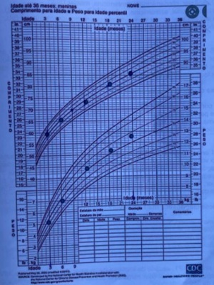
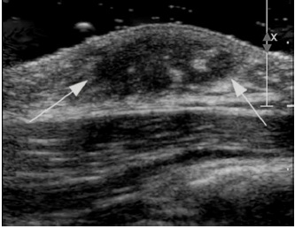
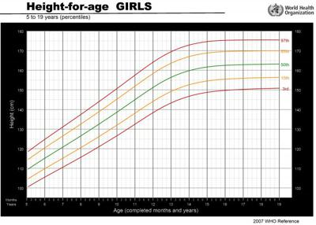
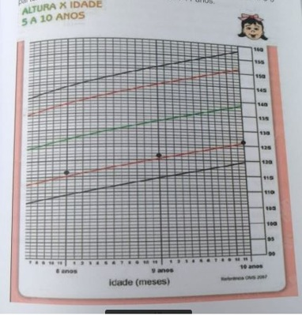

Menino de 10 anos é levado no pediatra para avaliação de rotina, no exame físico nota-se que o escroto se apresenta levemente aumentado, com pele mais escura e mudança de textura. Pênis sem aumento. Observa-se também pelos nos, longos e curvos, esparsos, mas com maior concentração próximo à base do pênis. O pediatra poderá registrar que o estádio puberal do genital (G) e dos pelos púbicos (P) da criança são respectivamente:
No que concerne aos distúrbios puberais, assinale a alternativa correta
Escolar do sexo feminino de 8 anos e 6 meses de idade, previamente hígida, vem para consulta de rotina na Unidade Básica de Saúde. A mãe queixa-se que a menina apresenta odor axilar há 6 meses. Nega menarca. Ao exame clínico, o médico nota a presença de pequena quantidade de pelos axilares bilateralmente; broto mamário à esquerda formando pequena saliência com elevação da mama e da papila; ausência de broto mamário à direita; ausência de pelos em região pubiana. O estadiamento puberal de Tanner para esta menina é:
O tratamento inicial para a puberdade precoce, decorrente da Síndrome de McCune Albright, é
Uma adolescente com 12 anos e 6 meses de idade relata que percebeu o início do desenvolvimento mamário há cerca de 4 meses. Sempre foi eutró ca e apresenta asma leve controlada com corticoterapia inalatória em baixas doses há 1 ano. No exame físico apresenta a estatura entre o escore-z -2 e -1 e o IMC entre o escore-z 0 e + 1. Na avaliação da maturação sexual apresenta pequeno disco glandular restrito à região subareolar bilateralmente. Desde seu último atendimento, realizado há 6 meses, a adolescente cresceu 3,5 cm. Assinale a afirmativa correta.
Revisar: possível letra faltando em enunciado
Menina de oito anos de idade é levada pelos pais ao ambulatório de ginecologia com queixa de aparecimento de mamas e pelos pubianos. Além disso, menstruou pela primeira vez. No exame físico, observou-se a presença de características sexuais secundárias. Os exames de laboratório mostravam a relação LH/FSH de 2,0. O resultado da radiologia dos pulsos foi de 2.5 DP da média. A ultrassonografia pélvica foi normal. Assinale a alternativa CORRETA em relação ao quadro acima.
Menina de 4 anos apresenta pubarca há 6 meses. Ao exame: estatura em +1.8 e IMC +2.8 desvios padrão para idade e sexo. Face pletórica. Tanner M1P3, clitoromegalia, hirsutismo e acne grau 1 em face. Dosagens de androgênios basais alteradas, especialmente o DHEA-S. Na investigação dessa paciente, certamente deveriam ser solicitados, em algum momento, os seguintes exames, exceto:
De acordo com a escala de Tanner, para paciente do sexo feminino, apresentando mamas e aréolas aumentadas, sem separação do contorno e pelos pubianos esparsos, levemente pigmentados, retos, mediais à borda dos lábios, a maturação sexual é classificada como:
Uma menina de seis anos de idade preocupou sua mãe por já ter iniciado a menstruação e por ter apresentado aumento das mamas. Com isso, foi levada ao ginecologista, que notou, além de mamas em M3, pelos pubianos e axilares em estágio IV de Turner. A genitália externa, apesar de mais desenvolvida, não apresentava alterações importantes. As ultrassonografias pélvica e abdominal, bem como a ressonância de sistema nervoso central revelaram-se normais. Com base nesse caso hipotético, assinale a alternativa que apresenta o tratamento mais adequado para a paciente.
Uma menina, escolar, com 9 anos de idade, é levada para atendimento com queixa de dor persistente na mama esquerda há 30 dias, sem outros sintomas associados. Ao exame físico, apresenta broto mamário à esquerda doloroso à palpação, broto mamário ausente à direita, com pelos longos, macios e ligeiramente pigmentados na linha central pubiana. Peso e estatura adequados para a idade. A classificação do estágio puberal, conforme os critérios de Tanner, e a conduta preconizada nessa situação são, respectivamente:
Entre as causas de puberdade precoce periférica, destaca-se:
Existe uma ampla variação siológica em idade para o início da puberdade que depende do eixo hipotalâmico-hipo sário- gonodal. A situação que deve ser investigada é:
Uma menina de 10 anos de idade apresenta classificação de Tanner M3P2. A mãe está preocupada porque sua lha ainda não menstruou, apesar de já ter pelos pubianos. Neste momento, você deve informar à mãe que:
Os estágios G2, G3 e G4 de Tanner para meninos são marcados, respectivamente, por:
O médico da saúde da família em atendimento a dois adolescentes, avaliou no exame físico que Júnior, de 11 anos, apresenta pênis com características infantis, ausência de pelos na região genital e volume dos testículos de 5 mL. Jaqueline, de 10 anos, apresenta tecido glandular mamário subareolar palpável à direita, com aumento do diâmetro aureolar e à esquerda ausência de tecido glandular mamário; além disso, Jaqueline tem ausência de pelos na região genital. De acordo com os critérios de Tanner de classificação dos caracteres sexuais secundários e sua relação com o crescimento na puberdade,
O início da puberdade é determinado pela herança familiar ou genética e por fatores neuroendócrinos que podem ser modulados pelo estado de saúde, pela adequação nutricional, por exercícios físicos, pela exposição a produtos químicos ambientais. Assinale a alternativa que indica o primeiro sinal clínico que surge em decorrência da ativação do eixo HHO (hipotálamo hipófise ovariano) no início da puberdade fisiológica.
Pode-se afirmar, sobre o desenvolvimento dos caracteres sexuais secundários, que:
Uma paciente feminina, 4 anos de vida, apresenta aumento na velocidade do crescimento no último ano, e ultrapassa o score Z+2. Mãe relata que a criança é a maior na turma da creche e que estranhou a presença de odor em axilas. Frente à principal hipótese diagnóstica deste caso, qual dos exames abaixo é fundamental para o início da investigação?
Mãe traz lha de 2 anos à consulta referindo ter observado crescimento de ambas as mamas há 3 meses. Nega desenvolvimento de pelos ou odor axilar. Antecedentes pessoais: nasceu de parto normal a termo e peso adequado. Nega antecedentes de doenças. Antecedentes familiares: irmãs de 4 e 7 anos com ausência de desenvolvimento puberal. Exame físico: Tanner M2 P1, genitália externa feminina e pré-púbere. Desenvolvimento pondero estatural no gráfico abaixo. curva de estatura e peso do Centro de Controle de Prevenção de Doenças dos Estados Unidos (CDC) Qual a melhor conduta para esta paciente?

Paciente sexo feminino de 11 anos é trazida à consulta pediátrica pela avó materna devido à preocupação pela neta estar “virando moça” muito rápido, embora ainda não havia menstruado. Ao exame físico, a paciente estava em M3 P4 segundo os critérios de Tanner. Sobre o caso descrito, é CORRETO que:
Uma menina de 5 anos de idade comparece à consulta médica pois sua mãe está preocupada com o aparecimento de pelos pubianos há 4 meses. Ao analisar o prontuário da criança você observa que ela cresceu 5cm nos últimos 12 meses. Sua estatura e peso encontram-se no escore Z zero, observam-se pelos nos e lisos ao longo dos grandes lábios. Não há acne ou odor axilar e sua idade óssea resultou 5 anos e 6 meses, as dosagens de 17 hidroxiprogesterona de DHEA-S encontram-se normais. Diante desse quadro é correto afirmar:
Uma menina de cinco anos apresenta aumento da mama, sangramento vaginal e massa pélvica de 8 cm, das alternativas seguintes qual é a etiologia mais provável?
A causa mais comum de puberdade precoce em menina de 7 anos de idade é:
Entre as situações abaixo, qual delas indica uma evolução inesperada da puberdade que necessita de investigação?
Clarissa, 6 anos, foi levada à consulta por sua mãe. Broto mamário apareceu há 6 meses e agora está com pelos nos grandes lábios. Nega outras queixas. Nega sangramento vaginal. Ao exame: Tanner M3P2, altura 1,40 (acima do percentil 95) PA: 100x60mmhg, FC 80 bpm. Aparelho Respiratório: Murmúrio Vesicular Universalmente Audível sem Ruídos Adventícios; Aparelho Cardiovascular: ritmo cardíaco regular, dois tempos; abdômen indolor e sem visceromegalias. Idade óssea de 10 anos. Qual o provável diagnóstico da puberdade precoce de Clarissa?
O eclodir da puberdade precoce isossexual verdadeira numa menina deve ser bloqueado para manter o poten- cial de altura da paciente, além de poupá-la dos aspectos emocionais que possam decorrer dessa ocorrência. O padrão-ouro nessa terapêutica é o uso de
Na ginecomastia puberal, ocorre aumento de qual tecido?
Uma menina de nove anos de idade foi levada a uma consulta de puericultura. Sua mãe está preocupada, pois a menina já está com a mama aumentada e com pelos pubianos. Ao exame físico, a classificação de Tanner é M3P2. Com base nessa situação hipotética, assinale a alternativa correta.
Adolescente de 15 anos de idade vai à Unidade Básica de Saúde trazida pela mãe, para avaliação ginecológica. Paciente ainda não teve menarca. Refere surgimento de brotos mamários bilateralmente há um mês. Peso e estatura nos percentis 40 para a idade e o sexo. Ao exame físico, presença de broto mamário bilateralmente e pêlos pubianos iniciais (M2P2). Genitália externa sem alterações. Qual a conduta MAIS ADEQUADA em relação ao caso?
Larissa retorna ao ambulatório após a alta para receber orientações. Antes da crise atual estava sem acompanhamento há um ano e meio. Eventualmente procurava emergências em caso de dor ou febre. O cartão de vacinas revela que está em dias para as vacinas de rotina do Programa Nacional de vacinação (PNI), além da vacinação antipneumocócica correta até os cinco anos de idade. Ao exame físico Larissa se encontra no estádio 2 de Tanner. Ao orientar a Larissa e sua mãe sobre os eventos da puberdade feminina pode-se afirmar que:
Considera-se como sinal de alerta para transtorno do desenvolvimento puberal:
Com relação às características da adolescência normal, marque a alternativa CORRETA:
Adolescente, 14 anos, masculino, comparece ao ambulatório com queixa dor quando mexe no seio esquerdo. No exame físico é palpado abaixo da aréola do seio esquerdo, massa fibrosa com cerca de 1 cm de diâmetro. O estágio de Tunner é 4, com o volume testicular de 8 ml. A conduta nesse caso é:
Lactente, sexo feminino, 18 meses, é levada ao hospital pela mãe, que observou há três meses aumento de volume abdominal, pelos pubianos e acne em face. Exame físico: bom estado geral, acne facial, PA: 90 x 50 mm Hg, pelos pubianos encaracolados e hipertrofia de clitóris. Abdômen: massa palpável em loja renal esquerda. A hipótese diagnóstica é:
Paciente com 8 anos e 3 meses de idade, com história de telarca há 6 meses, vem ao consultório para avaliação puberal. Ao exame físico apresenta estádio puberal de Tanner: M3P3. Diante do caso clínico apresentado, assinale a alternativa
Menino de 15 anos é avaliado em consulta de hebiatria. Não era levado ao médico desde os 8 anos de idade. Não apresenta queixas. Ao exame, tem peso em +0.8, altura em +2.2 e IMC em -1.2 desvios padrão para sexo e idade e apresenta ginecomastia. Envergadura é 8 cm maior que estatura e relação segmento superior/segmento inferior é 0,6. Tanner G1P4. Solicitados exames que evidenciaram testosterona total baixa e gonadotro nas elevadas para a idade. O exame que deverá ser feito a seguir para elucidar a etiologia do problema é
Adolescente do sexo feminino fez 14 anos um dia antes de ir à consulta, mas está muito preocupada, pois ainda “não menstruou”. O exame físico não evidenciou nenhuma alteração e o estágio de maturação sexual naquele momento era M3P2. A hipótese diagnóstica mais provável é
Um menino de 14 anos relata dor e nodulação em região mamária há 6 meses. Desde os 12 anos, relata ter iniciado aumento do pênis e pili cação genital. Nega quaisquer outras queixas e uso de medicamentos ou drogas ilícitas. Está saudável, sem alterações ao exame físico geral e especial, estágio de maturação sexual G3P3 (pênis com 8 cm de comprimento e testículos de cerca de 10 cm3 bilateralmente) e presença de tecido glandular mamário bilateral com cerca de 2 cm de diâmetro (M2 bilateral). Assinale a alternativa correta com relação à causa mais provável da ginecomastia e à conduta a ser realizada:
Durante o desenvolvimento puberal normal, em torno de 85% das meninas passam pelos eventos na seguinte ordem:
Uma menina de 7 anos de idade apresenta cheiro axilar forte, pelos pubianos e axilares ralos e mamas em fase de botão (elevação da mama e aréola como pequeno montículo). Tendo em vista o mencionado quadro clínico e os conhecimentos médicos correlatos, assinale a alternativa correta.
Adolescente do sexo feminino, com 14 anos de idade, está preocupada porque ainda não teve menarca. Não tem antecedentes patológicos. Ao exame físico, está eutró ca, com altura no escore-z entre 0 e +1, estadiamento puberal (Tanner) M3 P4, sem outros achados. A conduta indicada é:
Revisar: possível letra faltando em enunciado
Na avaliação da puberdade de uma garota, foram identi cados projeção da papila e aréola acima do contorno da mama e pelos escuros, crespos e grossos nos grandes lábios, na sínfise púbica e no períneo, o que corresponde aos estágios:
Paciente 9 anos é trazida pela mãe em virtude do aparecimento de nódulo mamário dolorido à direita. A mãe tem 42 anos de idade e encontra-se em tratamento quimioterápico para câncer de mama. O avô materno faleceu devido a câncer de próstata aos 80 anos. No exame clínico da criança, a altura e o peso encontram-se no percentil 50. Presença de leve pili cação genital e axilar bilateral; genitália com vulva e introito vaginal normais, com hímen íntegro. Presença de nódulo broelástico retroareolar direito com cerca de 1cm, parcialmente aderido à aréola e levemente doloroso. Região mamária e aréola esquerda sem achados palpatórios. O restante do exame clínico é normal. A ultrassonogra a da aréola direita é apresentada. Qual é a conduta?

A ginecologia infanto-puberal é a área de estudo que abrange os cuidados do sistema reprodutor feminino, desde o nascimento até a puberdade. Essa área abarca, por exemplo, distúrbios de diferenciação sexual, sinequias, corrimentos e traumas genitais. A respeito desse assunto, julgue o item a seguir. A puberdade precoce, que se manifesta por meio do desenvolvimento de caracteres sexuais secundários antes dos oito anos de idade, pode ser dividida em puberdade precoce verdadeira — até 80% dos casos — ou pseudopuberdade precoce — cerca 20% dos casos.
Uma menina de seis anos de idade foi levada ao pediatra por apresentar discreto sangramento vaginal. A mãe informou que a criança apresentava aumento do volume das mamas seguido do aparecimento de pelos pubianos havia um ano. Não havia história familiar semelhante e outros antecedentes significativos. Ao exame físico, foram verificados: peso = 22 kg (escore Z = +1 para a idade); altura = 122,5 cm (escore +1<Z<+2 para a idade); sem achados morfológicos significativos; Tanner: M3P1. Os exames complementares apresentaram os seguintes resultados: LH 3 mU/mL (VR < 1,3); FSH 7mU/mL (VR= 0,11 a 1,6); estradiol 80 mU/mL (VR = 0 a 46); US pélvica: útero de volume normal, com linha endometrial e ovários aumentados de volume; idade óssea: 8 anos. Com relação a esse caso clínico, julgue o item a seguir. Cerca de 80% dos casos como o da criança em questão são de origem idiopática, devido ao amadurecimento precoce do eixo hipófise-hipotálamo-gônadas.
Uma menina de seis anos de idade foi levada ao pediatra por apresentar discreto sangramento vaginal. A mãe informou que a criança apresentava aumento do volume das mamas seguido do aparecimento de pelos pubianos havia um ano. Não havia história familiar semelhante e outros antecedentes significativos. Ao exame físico, foram verificados: peso = 22 kg (escore Z = +1 para a idade); altura = 122,5 cm (escore +1<Z<+2 para a idade); sem achados morfológicos significativos; Tanner: M3P1. Os exames complementares apresentaram os seguintes resultados: LH 3 mU/mL (VR < 1,3); FSH 7mU/mL (VR= 0,11 a 1,6); estradiol 80 mU/mL (VR = 0 a 46); US pélvica: útero de volume normal, com linha endometrial e ovários aumentados de volume; idade óssea: 8 anos. Com relação a esse caso clínico, julgue o item a seguir. Nesse caso, não está indicada a realização de ressonância magnética do cérebro com contraste como método avaliativo adicional.
Menina, 6 anos, é levada ao ginecologista pela mãe, pois observou surgimento de broto mamário, bilateralmente, há 2 meses. Exame físico: 20kg; 110cm; mamas estágio M2 de de virilização. Exames laboratoriais: LH = 0,2UI/L; E2 = 5pg/mL. RX de mão e punho: compatível com a idade cronológica. A hipótese diagnóstica mais provável é:
O conhecimento sobre adolescência e puberdade é essencial para o melhor cuidado das crianças/adolescentes, avaliando o que é dentro da normalidade para orientação, e o patológico para identificação e abordagem precoce. Sobre o tema assinale a INCORRETA:
Em relação ao crescimento na adolescência, analise as assertivas abaixo: I. O crescimento na adolescência é desproporcional, iniciando-se, primeiramente, pelas extremidades distais. II. As meninas, além de iniciarem a puberdade mais cedo, apresentam um pico de velocidade de crescimento mais precocemente que os meninos, entre os estádios 2 e 3 de Tanner. III. Durante a puberdade, em ambos os sexos, os esteroides sexuais, principalmente os estrógenos, são essenciais para acelerar o crescimento por meio da ação em receptores específicos da placa epi sária, promovendo crescimento e mantendo abertas as epífises. Quais estão corretas?
Escolar de oito anos e seis meses do sexo feminino é trazida pela mãe para avalição de seu crescimento e desenvolvimento puberal. Está preocupada porque foi realizado exame de idade óssea com laudo de 12 anos. Criança sem queixas clínicas. Alimentação adequada para a idade, sono reparador das 21h às 6h, pratica natação quatro vezes por semana. Dados de nascimento: estatura = 44 cm, peso = 2,390 Kg, RNT PIG, confirmado retardo de crescimento intrauterino (RCIU) por USG seriadas, Apgar 8 e 9. Estatura da mãe: 155 cm, Estatura do pai: 168 cm. Exame físico: peso: 34 kg, estatura: 134 cm, IMC: 18,9. Mamas: Aumento da mama para além da aréola, mas sem separação de seus contornos. Púbis: pelos do tipo adulto, cobrindo densamente a região púbica em forma de triângulo, sem atingir a face interna das coxas. Utilize o gráfico a seguir para plotar os dados clínicos. No caso, o estadiamento de Tanner e seu significado sinalizam:

Leia o caso clínico a seguir. Adolescente comparece para consulta ambulatorial com 13 anos. No exame da genitália, observa-se testículos com medida de 5 ml, pênis sem aumento e pelos pubianos no estágio P1 de Tanner. Estatura aferida estava no percentil 10 e o índice de massa corporal calculado no percentil 80 (curvas da OMS, 2007). Nesse caso, qual é o provável diagnóstico?
Leia o caso clínico a seguir. Adolescente do sexo feminino de 12 anos encontra-se atualmente com estatura de 1,40 cm. O indicador estatura-idade está entre o Z score -1 e o Z score -2 (curva OMS, 2007). O estágio de maturação sexual é o M2P1 (classificação de Tanner). A velocidade de crescimento no último ano foi de 8 cm e a estatura alvo genético estimada de 1,60 metros. Considerando a situação descrita, a análise dos dados clínicos e antropométricos mencionados indica que a adolescente
Leia o caso clínico a seguir. Uma criança do sexo feminino, de três anos, é atendida no serviço de pediatria com presença de pelos pubianos e axilares, acne em face e aceleração do crescimento. O exame físico mostrou aumento de abdome com massa palpável e clitóris aumentado. A história clínica e exame físico indicam:
Revisar: possível letra faltando em alt B
Leia o caso clínico a seguir. Adolescente comparece para consulta ambulatorial com 13 anos. No exame da genitália, observa-se testículos com medida de 5 ml, pênis sem aumento e pelos pubianos no estágio P1 de Tanner. Estatura aferida estava no percentil 10 e o índice de massa corporal calculado no percentil 80 (curvas da OMS, 2007). Nesse caso, qual é o provável diagnóstico?
É sinal de alerta para transtorno do desenvolvimento puberal:
Adolescente, 10 anos e 6 meses de idade, masculino, apresenta aumento do pênis em toda a extensão, volume testicular de 5 ml, e presença de pelos mais escuros e ásperos sobre o púbis. De acordo com os dados clínicos descritos, assinale a alternativa que apresenta e Tanner.
Os estágios G2, G3 e G4 de Tanner para meninos são marcados, respectivamente, por:
Clara traz sua lha de 6 anos, pois a menina “está cando moça” há 8 meses e a mãe está preocupada com a possibilidade dela menstruar mais cedo. Ao exame, a menor apresenta estadiamento de Tanner M3P2. Sobre este caso, podemos dizer que:
Menina de 4 anos de idade, história de telarca há 1 ano. Tanner M4P2. Idade óssea, 6 anos. Nos últimos 6 meses, cresceu 4,5cm. Sem antecedentes patológicos. Sobre a investigação desse caso, está correto afirmar que
Os eventos habituais no desenvolvimento puberal normal, em ordem de surgimento, são:
Menina, nove anos, é trazida à consulta médica pela mãe com queixa de aumento da mama direita. Exame físico mostra telarca estágio 2 de Tanner à direita e estágio 1 de Tanner à esquerda; pubarca estágio 1 de Tanner. A conduta a ser tomada é:
Roberto, dois anos e seis meses, é levado pela mãe ao seu consultório. Queixa-se de, há 3 meses, aumento peniano e de pêlos na região genital de seu lho. Exame físico: pelos grossos, encaracolados em púbis e bolsa escrotal, pênis com cerca de 7,5 cm de comprimento com aumento do diâmetro e testículos aumentados (8 cm³) bilateralmente. A possível etiologia da puberdade precoce está relacionada lesão de:
O início do desenvolvimento puberal é universal e, possivelmente, geneticamente determinado, embora possa sofrer influência de fatores ambientais, étnicos, nutricionais e emocionais. Marque a alternativa correta, quanto ao desenvolvimento puberal:
Adolescente do sexo feminino, 12 anos de idade, vem a consulta ambulatorial preocupada, pois a maioria de suas amigas já está até começando a menstruar, mas ela ainda nem apresenta broto mamário. Nega comorbidades, nega uso de medicações. A mãe da paciente refere que teve a menarca aos 14 anos de idade. A adolescente encontra-se em estadio puberal M1P1, sem alterações significativas no exame clínico. Veri cado que houve ganho de 3 cm de altura nos últimos 6 meses Frente aos achados, está indicado:
Revisar: possível letra faltando em enunciado
Adolescência é a fase que marca a transição entre a infância e a idade adulta. Caracteriza-se por alterações em diversos níveis: físico, mental e social, e representa para o indivíduo um processo de distanciamento de formas de comportamento e privilégios típicos da infância e de aquisição de características e competências que o capacitem a assumir os deveres e papéis sociais do adulto. São sinais de alerta para transtornos do desenvolvimento puberal, EXCETO:
Adolescente do sexo masculino com 14 ano apresenta aumento do volume mamário bilateralmente. Refere que isso ocorreu há cerca de 2 anos junto com o desenvolvimento dos pelos e do pênis. Ao exame físico: altura 176 cm, M3 bilateral, P4, pênis com 6 cm de comprimento esticado e testículos com 3 mL de volume bilateralmente. Quais exames devem ser solicitados?
Uma adolescente de 16 anos acompanhada de sua mãe vem ao consultório do pediatra com queixa de que é a menor da classe. A mãe nega antecedentes de doenças, diz que a lha sempre foi menor que os irmãos e que ainda não teve a menarca. Ao exame físico, o pediatra constata baixa estatura, não apresenta telarca ou pubarca e não observa nenhum sinal dismór co. Dentre os exames citados a seguir, aquele que é indicado para a primeira hipótese diagnóstica desse quadro clínico é:
Revisar: possível letra faltando em enunciado
Com relação ao estadiamento puberal, crescimento e menarca em adolescente do sexo feminino, pode-se afirmar que:
Menina de 11 anos de idade em consulta de Puericultura. Sua mãe tem dúvidas quanto à puberdade, pois acha que a menina está atrasada em relação às demais. Ao exame clínico: BEG, corada, hidratada. Mamas: presença de glândula mamária à direita (pequena elevação da mama e da papila, o tecido mamário tem localização subareolar). Pelos pubianos longos, nos e lisos nos grandes lábios. Nada digno de nota nos demais aparelhos. Estatura entre Z 0 e Z +1, IMC entre Z 0 e Z+1 da OMS. Assinale a alternativa que traz informações corretas em relação à puberdade no sexo feminino:
Menina de 11 anos de idade em consulta de Puericultura. Sua mãe tem dúvidas quanto à puberdade, pois acha que a menina está atrasada em relação às demais. Ao exame clínico: BEG, corada, hidratada. Mamas: presença de glândula mamária à direita (pequena elevação da mama e da papila, o tecido mamário tem localização subareolar). Pelos pubianos longos, nos e lisos nos grandes lábios. Nada digno de nota nos demais aparelhos. Estatura entre Z 0 e Z +1, IMC entre Z 0 e Z+1 da OMS. Classifique a paciente, de acordo com os estágios da maturação sexual de Tanner (M para mamas e P para pelos).
Mãe leva adolescente de 15 anos para consulta médica, preocupada com o crescimento do lho, pois o irmão mais novo tem a mesma altura dele. Ao exame físico, sua estatura se encontra no score -1 e peso no score 0; estádio de Tanner G1P1. Qual o diagnóstico?
Um achado do exame físico, dentre os abaixo, que configura atraso puberal é AUSÊNCIA de
Com relação ao crescimento e à puberdade em adolescentes, pode-se afirmar que:
Adolescente de 13 anos, do sexo feminino, comparece ao atendimento de rotina. Ao exame físico, observou-se maior elevação da mama e da papila, sem separação dos contornos da aréola e da mama e presença de pelos pubianos escuros e encaracolados, concentrados na linha média. De acordo com os critérios de Tanner, o estágio puberal dessa adolescente deve ser classificado como:
A etiologia do atraso puberal mais comumente observada em serviços ambulatoriais é
A ginecomastia é a proliferação benigna do tecido glandular no sexo masculino, sobre esta condição assinale a alternativa CORRETA.
Dentre as diversas variações siológicas quanto à idade para o início da puberdade, a situação abaixo que deve ser investigada é:
Na análise dos distúrbios puberais, é importante conhecer a cronologia normal dos eventos puberais. Qual o primeiro sinal puberal nos meninos?
A respeito da puberdade, podemos afirmar que todas estão corretas, exceto:
Ana Clara, 7 anos de idade, procurou a Unidade Básica de Saúde com sua mãe pois apresenta broto mamário há 1 ano, pubarca há seis meses e crescimento acelerado. Família com altura no Z-escore 0. Ao exame físico: Crescimento e peso Z - escore +1, M3 P2. A sequência e o desenvolvimento puberal desta menina é compatível com:
Em relação à Adolescência, assinale a opção INCORRETA.
A puberdade é a fase da vida em que ocorrem modi cações no corpo de uma criança fazendo com que ela se torne um adulto. Em relação a essa fase da vida da criança: I - Nas meninas o primeiro sinal de puberdade é a telarca; II - Nas meninas o primeiro sinal de puberdade é a pubarca; III - A menarca ocorre em média, dois anos após o aparecimento das mamas; IV - Nos meninos, o primeiro sinal de puberdade é o aumento dos testículos; V - Considera-se puberdade precoce quando surge nas meninas, antes dos 8 anos e nos meninos, antes dos 9 anos. Assinale a alternativa CORRETA:
Menina de 5 anos é levada ao pronto atendimento por aumento de volume abdominal progressivo com dor há 2 semanas. Não apresenta febre, alterações urinárias ou gastrointestinais. Ao exame físico, além de massa palpável em hipocôndrio esquerdo, a paciente apresentava pili cação pubiana, hipertro a de clitóris e acne. Mãe relata que percebeu essas alterações há aproximadamente 6 meses, mas achou que fazia parte do desenvolvimento da criança. Levando em consideração os dados apresentados, a principal hipótese diagnóstica e os exames laboratoriais que devem ser solicitados para o esclarecimento diagnóstico são, respectivamente:
Gustavo, de quatro anos, apresenta desenvolvimento de pili cação genital há 3 meses. Mãe refere aumento do apetite, aparecimento de acne em face e que há 6 meses a estatura do paciente era de 97 cm. Sem outras queixas e não faz uso de medicação contínua. Pai com 172 cm (Percentil 25) e mãe com 152 cm (Percentil 3), saudáveis. Ao exame, paciente com 102 cm (Percentil 50), 18 kg (Percentil 75), corado, ativo, massa muscular aumentada para idade, precórdio, campos pleuropulmonares e abdômen sem particularidades, genitália com testículos em bolsa, tamanho T1 pelo Orquidômetro de Prader e pubarca grau 3 pela escala de Tanner. O exame mais prioritário para auxiliar no diagnóstico desse caso é
Assinale o primeiro sinal visível de adolescência nas meninas:
Auxiliadora, 13 anos, apresenta exame físico normal, está no estágio M3P2 de tanner. Família demonstra preocupação com o fato de não ter ainda apresentado menarca. A melhor conduta a ser seguida neste caso é
Meyre, 14 anos, compareceu hoje à consulta no ambulatório de adolescente preocupada por não ter apresentado a menarca. Nega antecedentes patológicos, a menarca de sua mãe ocorreu aos 12 anos. Ao Exame Físico: peso no percentil 50, altura no percentil 85, velocidade de crescimento 8,5 cm/ano, mamas: corpo mamário desenvolvido, semelhante a uma pequena mama adulta, papila mamária desenvolvida, contorno no mesmo plano do corpo mamário, pelos pubianos grossos, encaracolados, espalhando-se esparsamente pela sín se pubiana. Assinale a alternativa que CONTÉM o diagnóstico de Meyre e seu estágio puberal de Tanner.
Adolescente do sexo feminino, dez anos e meio de idade, comparece à UBS com queixa de que é mais baixa do que as colegas de sua turma de escola. Trouxe anotações de altura com 8, 9 e 10 anos, na caderneta de saúde, conforme a figura abaixo, sendo respectivamente: 116cm, 121cm e 126cm. A telarca iniciou-se aos nove anos. Apresentou o primeiro sangramento menstrual há dois meses e não teve outra menstruação desde então. Ao exame físico, observa-se Estágio de Tanner igual a M3P2. A mãe tem 152cm e o pai tem 165cm. A mãe teve a menarca aos 11 anos. A orientação MAIS ADEQUADA neste momento é de que:

Analisa as afirmações a seguir sobre a puberdade: I - A puberdade é o período de transição entre a infância e a adolescência. II - A puberdade coincide com um período de marcadas mudanças físicas e psicológicas, com estirão de crescimento, a maturidade sexual e a capacidade reprodutiva. III - A puberdade é o resultado da inter-relação entre três principais fatores: gen[eticos, sociais e ambientais. Está(ão) correta(s) a(s) afirmativa(s):
Uma menina de 13 anos é atendida no pediatra, com relato de ainda não ter iniciado a menstruação. Telarca e pubarca aos 12 anos, com crescimento normal até então. O exame clínico é normal com desenvolvimento puberal Tanner P4 e M4. Assinale a alternativa correta:
Uma escolar com 9 anos e 2 meses vem à consulta pelo surgimento de broto mamário saliente, pelos lisos e nos na região pubiana e odor axilar leve. A mãe refere que não há secreções nem sangramento genital. Como você acompanha essa paciente em seu ambulatório, observou uma velocidade de crescimento de 6 cm/ano, o peso no p50 e a estatura no p75. O exame também revelou um brotamento mamário em M1, pelos esparsos pigmentados, ao longo dos lábios, sem outras alterações ao exame físico. Quais
A síndrome de Mc-Cune-Albright é um exemplo de.
Mãe leva lha de nove anos e um mês ao pediatra, ansiosa e preocupada com a seguinte queixa: ""Minha lha está com pelos e já tem peitinho, e eu tenho medo que ela não cresça mais"". Durante a consulta, o pediatra observa que a menina está no percentil 50 para peso e estatura e com desenvolvimento puberal em M2 e início de P2. Não apresenta alterações significativas no DNPM e nem ao exame físico. Nesse caso,
Uma paciente de 12 anos de idade vai a consulta agendada em Unidade de Saúde da Família acompanhada pela mãe. A familiar demonstra preocupações quanto ao desenvolvimento da lha, alegando ser esta uma das mais baixas entre as respectivas colegas e que ainda não teve a primeira menstruação, a despeito de estar notando desenvolvimento das mamas há 10 meses, observando-se a presença de broto mamário ao exame físico. Refere-se, também, que a mãe está receosa de a lha vir a ser diagnosticada com síndrome dos ovários policísticos (SOP), tendo base tal preocupação em leitura de informações da internet em correlação com o fato de a lha apresentar acne facial, de ainda nunca ter menstruado e de possuir histórico familiar de primeiro grau de obesidade e diabetes mellitus tipo 2. Faz uso de metilfenidato 10 mg/dia por diagnóstico prévio de transtorno de de cit de atenção e hiperatividade, demonstrando manter atenção apenas para atividades do próprio interesse, sem, no entanto, apresentar histórico de baixo desempenho escolar ou prejuízo da vida social. Em avaliação ponderoestatural, verifica-se IMC de 21 kg/m², considerado adequado para a idade da paciente. Com base nesse caso clínico e nos conhecimentos médicos correlatos, julgue o item a seguir. Conforme a normalidade de crescimento e desenvolvimento previsto para o sexo feminino, é esperado que a paciente apresente pico da velocidade de crescimento em período de aproximadamente um ano após o aparecimento do broto mamário, período em que também se espera a menarca.
Paciente, 6 anos, sexo feminino, é atendida no ambulatório de Endocrinologia com queixa de dor e aumento das mamas bilateralmente. Ao exame: Bom estado geral, eupneica, normocorada. Peso: 21kg (Z=+0,24). Estatura=1,20m (Z=+1). Estágio puberal de Tanner: M3P2. Presença de odor axilar, sem pelos axilares ou acne. Foram solicitados exames com os respectivos resultados: Idade óssea= 8 anos; LH com valores puberais; Ultrassonogra a pélvica com volume de útero e ovários acima do esperado para a idade. Diante do caso apresentado, qual a conduta mais indicada?
Uma menina de sete anos de idade foi levada a um pediatra porque a mãe havia observado aumento das mamas da criança seguido pelo aparecimento de pili cação pubiana, fatos esses ocorridos nos últimos 3 meses anteriores à consulta. Não havia relato de metrorragia. A menina pesava 25 kg (Z Score +1) e media 125 cm (Z Score +1). No exame físico, o médico observou aumento da aréola e da papila, sem separação do contorno da mama, e pelugem na, longa e pouco escura na linha central da região pubiana. O restante do exame físico somático e o exame neurológico resultaram normais. O valor do nível de LH após estímulo com GnRH foi de 6 UI/L. Com base nesse caso clínico, julgue o item que se segue. O diagnóstico clínico é de puberdade precoce central.
Uma menina de sete anos de idade foi levada a um pediatra porque a mãe havia observado aumento das mamas da criança seguido pelo aparecimento de pili cação pubiana, fatos esses ocorridos nos últimos 3 meses anteriores à consulta. Não havia relato de metrorragia. A menina pesava 25 kg (Z Score +1) e media 125 cm (Z Score +1). No exame físico, o médico observou aumento da aréola e da papila, sem separação do contorno da mama, e pelugem na, longa e pouco escura na linha central da região pubiana. O restante do exame físico somático e o exame neurológico resultaram normais. O valor do nível de LH após estímulo com GnRH foi de 6 UI/L. Com base nesse caso clínico, julgue o item que se segue. Nessa criança, o estagiamento do desenvolvimento puberal segundo Tanner é M4P3.
Uma menina de sete anos de idade foi levada a um pediatra porque a mãe havia observado aumento das mamas da criança seguido pelo aparecimento de pili cação pubiana, fatos esses ocorridos nos últimos 3 meses anteriores à consulta. Não havia relato de metrorragia. A menina pesava 25 kg (Z Score +1) e media 125 cm (Z Score +1). No exame físico, o médico observou aumento da aréola e da papila, sem separação do contorno da mama, e pelugem na, longa e pouco escura na linha central da região pubiana. O restante do exame físico somático e o exame neurológico resultaram normais. O valor do nível de LH após estímulo com GnRH foi de 6 UI/L. Com base nesse caso clínico, julgue o item que se segue. O tratamento mais indicado ao caso é a administração de agonistas de longa ação do GnRH (hormônio liberador de gonadotro nas), com o objetivo de suprimir a produção de gonadotro nas hipo sárias e de esteroides sexuais, para, assim, promover-se a regressão dos caracteres sexuais secundários e diminuir a velocidade de crescimento e progressão da idade óssea.
Uma menina de sete anos de idade foi levada a um pediatra porque a mãe havia observado aumento das mamas da criança seguido pelo aparecimento de pili cação pubiana, fatos esses ocorridos nos últimos 3 meses anteriores à consulta. Não havia relato de metrorragia. A menina pesava 25 kg (Z Score +1) e media 125 cm (Z Score +1). No exame físico, o médico observou aumento da aréola e da papila, sem separação do contorno da mama, e pelugem na, longa e pouco escura na linha central da região pubiana. O restante do exame físico somático e o exame neurológico resultaram normais. O valor do nível de LH após estímulo com GnRH foi de 6 UI/L. Com base nesse caso clínico, julgue o item que se segue. É indispensável que a menina realize exames de raios X das mãos e dos punhos, para avaliação da sua idade óssea, ultrassonogra a pélvica, para avaliação do tamanho do seu útero e de sua espessura endometrial, além de ressonância magnética do sistema nervoso central, para afastar o diagnóstico de lesões tumorais ou malformações.
Com relação ao retardo do desenvolvimento puberal, que pode ser uma das manifestações clínicas das doenças inflamatórias intestinais, assinale a alternativa correta: Respostas: 1 12 23 34 45 56 67 78 89 100